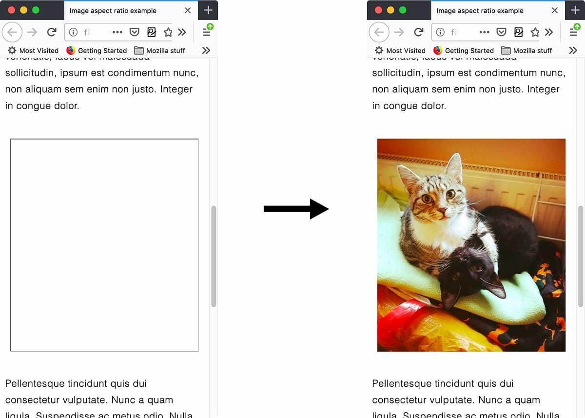

This article explains a change that has occurred in the way sizes are worked out on web documents when width and height attributes are set on them.
This change means that the aspect ratio of the image is calculated by the browser early on and can then be used to correct the size needed to display the image before it has loaded, if CSS has been applied that causes problems with its display size. Read on to find out more.
In the olden days of web development, it was always seen as a good practice to add width and height attributes to your HTML {{htmlelement("img")}} elements, so that when browsers first loaded the page, they could put a correctly-sized placeholder box in the layout for each image to appear in when it finally loads.

Without the width and height attributes, no placeholder space would be created, and when the image finally loaded you would get a noticeable jank in the page layout. This wasn't an attractive thing for your users to see, and could also result in performance issues due to the repainting required after each image loads, hence adding the attributes being a good idea.
Let’s move forward a few years to the era of responsive design. To keep images from breaking out of their containers when the container becomes narrower than the image, developers started using CSS like the following:
img {
max-width: 100%;
height: auto;
}
This is really useful for responsive layouts, but unfortunately it causes the jank problem to return — the above CSS overrides the width and height attribute information, meaning that if the image has not loaded for some reason, its height will be set to 0. When the image finally loads, the same jank will occur as the page layout is shifted to make space for it.
Recognizing the problem, a WICG community group formed to propose an intrinsicsize attribute. Folks from Mozilla then expanded on this thinking, working on a proposal in the CSS Box Sizing Level 4 draft to define an aspect-ratio property and propose the idea of using the width and height attributes to compute layout. Fantasai & Jen Simmons collaborated with Emilio, who worked on an experimental implementation to prove it would work.
Mozilla then brought the idea up in the WICG community group and discussed it further until representatives from Chrome were onboard with the idea.
Due to this work, browsers are working on adding a new mechanism for sizing images before the actual image is loaded. Firefox has added an internal aspect-ratio property (in version 69 onwards) that applies to replaced elements, and other related elements that accept width and height attributes. This appears in the browser's internal UA stylesheet, similar to the following:
img, input[type="image"], video, embed, iframe, marquee, object, table {
aspect-ratio: attr(width) / attr(height);
}
This actually affects any element that acts as a container for complex or mixed visual media — {{htmlelement("embed")}}, {{htmlelement("iframe")}}, {{htmlelement("marquee")}}, {{htmlelement("object")}}, {{htmlelement("table")}}, and {{htmlelement("video")}}, in addition to actual images ({{htmlelement("img")}} and <input type="image">). When such an element has width and height attributes set on it, its aspect ratio will be calculated before load time, and be available to the browser.
Note: Currently this effect is being limited to actual <img> elements, as applying to other such elements may have undesirable results. See ({{bug(1583980)}}).
When the width/height of an <img> element — as set using HTML attributes — is overridden using CSS using something like this:
img {
max-width: 100%;
height: auto;
}
The aspect ratio is then used to calculate the height and therefore the correct size is applied to the <img> element, meaning that the aforementioned jank will not occur when the image loads.
The new mechanism currently only works on <img> elements before the image is loaded.
Originally we were going to have the new mechanism apply the calculated sizing to <img> elements before and after the image has loaded. However, this caused a problem — a number of web sites actually use the width and height attributes incorrectly, setting an aspect ratio of something other than the image’s intrinsic aspect ratio.
Once such an image loads, if the internal aspect ratio is still applied it will result in the <img> not displaying the image correctly. Therefore, once the image is loaded, we start using the intrinsic aspect ratio of the loaded image rather than the aspect ratio from the attributes, so it displays at the correct aspect ratio.
So there you have it — eliminating another piece of jank from web layout! There is no need for a web developer to do anything special to their code to take advantage of this, besides returning to the habit of using width and height attributes in their HTML. They'll just get it for free.
Note: This new mechanism is enabled in Firefox 69 in beta and Nightly as the spec is worked out (controlled by the layout.css.width-and-height-map-to-aspect-ratio.enabled pref), and it is currently being implemented in Chrome. It will ship with Firefox 71.